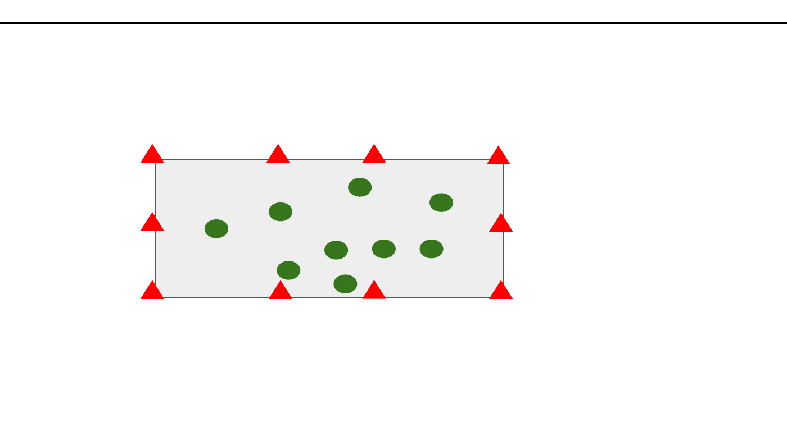

Koordinationsträning tränar förmågan att samordna spelarna göra olika saker som siffran anger. Tex “1 - Stå på ett kroppsrörelser i förhållande till varandra och omgivningen. Fotbollspsykologi ben”, “2 - Kryp på alla fyra”, “3 - Hoppa så högt du kan 5 gånger”, “4 - Gör en kullerbytta”
Motorikstopp
Spelarna rör sig fritt i ytan. När tränaren ropar en siffra ska
Orientering, Fotarbete, Snabbhet